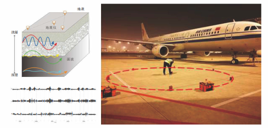

3.1 微动探测技术¶
微动是—种由体波和面波组成的复杂振动，并且面波的能量占总能量的70％以上。微动勘探主要采用台阵方法， 包括SPAC法和HN谱比值法，台阵主要选用圆形、三角形、 “+” 字形和线性排布。从微动信息中提取瑞雷面波 的频散特性，通过对频散曲线和H/V曲线进行反演，获得地层的横波速度，以此推断地壳浅部的地层结果。
3.1.1 地层结构重建流程¶
3.1.2 创新优势¶
数据采集 |
数据处理 |
地质解释 |
|---|---|---|
高精度三分 量地震仪稳定的7台阵观 测系统有效提高数据稳 定性现场数据采集体系 和标准，满足探测深度 ，保证数据准确可靠数 据实时传输，现场品控 ，对异常数据进行甄别 |
滤波器设计 ，台阵设计、有效提高 信噪比通过数据分析对 比，自动完成有效数据 提取工作设置控制阈值 ，自动去除时窗内噪声 |
改进传统反演算法，用H V谱比值法和空间自相关 法(SPAC)提取HV曲线和 面波频散曲线进行联合 反演，得出高精度、离 分辨率地层剖面，大大 提高反演精度和结果准 确性，提高运算效率， 快速寻找全局最优解。 |
3.1.3 体系创新¶
勘察阶段 |
监测内容 |
|---|---|
初步勘察阶段 |
采用较大间距的地质钻孔进行地质初勘 |
详细勘 察及补充勘察阶段 |
采用微动勘测技术进行区间详勘， 获取连续地层剖面； 再利用地质钻孔对微动识别的危险区域进行加密验证， 确认风险源并实施注浆加固等处理措施 |
盾构掘进过程中 |
在已验证的危险区域， 使用微动勘测技术进行盾构超前地质预报， 为盾构掘进提供实时地质信息 |
盾构掘进过后 |
利用微动勘 测技术进行滞后沉降监测，以提高对盾构掘进后危险区 间的沉降预警能力和地层空洞排查及准确回填处理能力 |